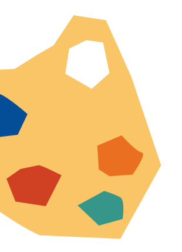
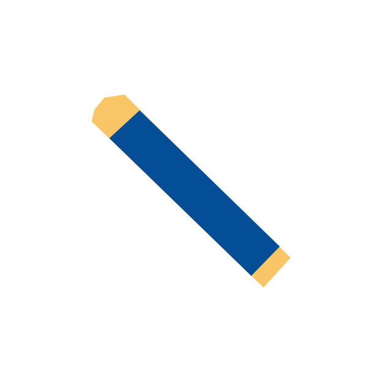
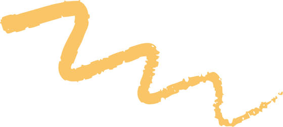
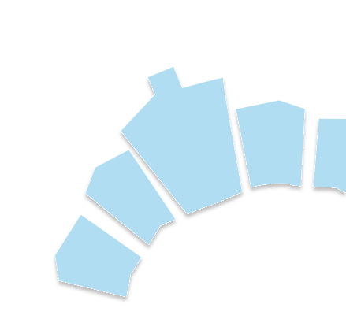
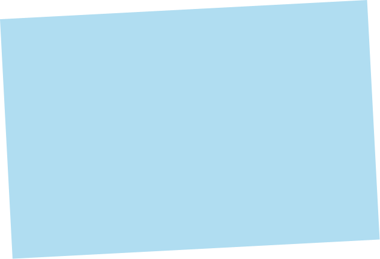
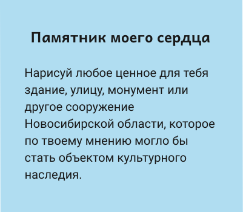
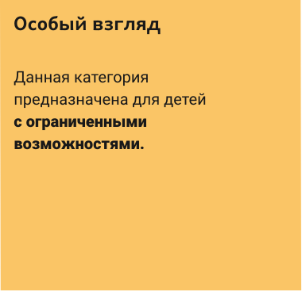

Для участия в конкурсе нарисуй своё любимое здание-памятник Новосибирской области на листе формата А3 и заполни анкету участника

Среди множества красивых зданий в Новосибирской области есть те, что охраняются нашим государством. Такие здания-памятники называются объектами культурного наследия (ОКН). Именно они - главные герои нашего конкурса. Ты можешь найти все такие памятники на карте ниже:


Авдеев Владимир Александрович
Художник театра, член Союза художников России с 1991 г., эксперт, аттестованный Министерством культуры РФ, по проведению государственной историко-культурной экспертизы

Кошелев Александр Владимирович
Начальник управления по охране объектов культурного наследия Новосибирской области с 2008 по 2019 гг., эксперт, аттестованный Министерством культуры РФ, по проведению государственной историко-культурной экспертизы

Рагино Георгий Янович
архитектор-реставратор, член Союза архитекторов России, ведущий специалист Архитектурной мастерской Тоскина
Что такое объекты культурного наследия (ОКН)?
Объекты культурного наследия (ОКН) - памятники (здания, монументы и др), возникшие в результате исторических событий, они ценны с точки зрения истории, архитектуры, искусства, науки и являются свидетельством эпох и цивилизаций, подлинными источниками информации о зарождении и развитии культуры. Все объекты культурного наследия Новосибирской области можно увидеть в Едином государственном реестре объектов культурного наследия (памятников истории и культуры) народов Российской Федерации. Подробнее о объектах культурного наследия можно узнать в презентации.
Какие известные объекты культурного наследия находятся в Новосибирске?
Самыми известными объектами культурного наследия города Новосибирска являются:
Какие известные объекты культурного наследия расположены в Новосибирской области?
Самыми известными объектами культурного наследия города Новосибирска являются:
Нужно ли присылать оригиналы работ для участия в конкурсе?
Для участия в конкурсе не нужно присылать оригинал работы, достатачно заполнить электорнную анкету участника и прикрепить к ней фотографию или цифровую копию вашей работы.
Организатор вправе запросить оригинал работы. Уведомление о предоставлении оригинала работы придет на указанную в анкете почту (законного представителя и/или учителя), также организаторы конкурса могут связаться с законным представителем по телефону.
В случае необходимости оригинал работы необходимо прислать в офис ГАУ НСО НПЦ ( 630099, г. Новосибирск, ул. Советская, 33) в течение 2 месяцев с момента поступления запроса о предоставлении оригинала.
Отсутствие оригинала конкурсной работы является причиной для отстранения участника конкурса и аннулирования результатов.
Можно ли отправлять на участие в конкурсе работы, выполненные в графических редакторах (Photoshop, Clip studio paint, Krita и д.р.)?
Нет. Работы, выполненные с использованием графических редакторов, не принемаются к рассмотрению в конкурсе.